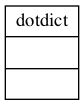

coa.tools module
Project : PyCoA - Copyright ©pycoa.fr Date : april 2020 - march 2021 Authors : Olivier Dadoun, Julien Browaeys, Tristan Beau License: See joint LICENSE file
Module : coa.tools
About
This is the PyCoA tools module to be considered as a swiss knife list of functions. One find function for
verbose or warning mode management.
kwargs analysis
filling nan values of given pandas
date parsing validation
automatic file caching system
The _verbose_mode variable should be set to 0 if no printing output needed. The default value is 1 (print information to stdout). The 2 value grants a debug level information printing.
Summary
Classes:
dot.notation access to dictionary attributes |
Class diagram:
{kind=link}
Functions:
Check if a string is compatible with a valid date under the format day/month/year with 2 digits for day, 2 digits for month and 4 digits for year. |
|
Expecting None or 1 or 2 dates separated by :. |
|
Filling the input pandas dataframe p with missing dates |
|
Return db list dict |
|
"Download data from the given url and store it into a local file. |
|
Return the verbose mode |
|
Print to stdout with similar args as the builtin print function, if _verbose_mode > 0 |
|
Test that the list of kwargs is compatible with expected args. |
|
Set the verbose mode |
|
Standardization of string for country,region or subregion tests |
|
Print to stdout with similar args as the builtin print function, if _verbose_mode > 1 |
|
convert week to date. 2 cases: - Rolling week if format is Y-M-D-Y-M-D: return middle dates - One week data Wnumber: return monday correction to the week number. |
Reference
- check_valid_date(date)[source]
Check if a string is compatible with a valid date under the format day/month/year with 2 digits for day, 2 digits for month and 4 digits for year.
- extract_dates(when)[source]
Expecting None or 1 or 2 dates separated by :. The format is a string. If 2 dates are given, they must be ordered. When 1 date is given, assume that’s the latest which is given. When None date is give, the oldest date is 01/01/0001, the newest is now.
It returns 2 datetime object. If nothing given, the oldest date is 01/01/0001,
- fill_missing_dates(p, date_field='date', loc_field='location', d1=None, d2=None)[source]
Filling the input pandas dataframe p with missing dates
- get_local_from_url(url, expiration_time=0, suffix='')[source]
“Download data from the given url and store it into a local file.
If the expiration time is 0 (default), the data will never be downloaded anymore if available. If the expiration time is < 0, it forces to download the file. If the expiration time (in seconds) is lower than time difference between now and last modification time of the file, the file is downloaded.
One may add a suffix to the local filename if known.
- info(*args)[source]
Print to stdout with similar args as the builtin print function, if _verbose_mode > 0
- kwargs_test(given_args, expected_args, error_string)[source]
Test that the list of kwargs is compatible with expected args. If not it raises a CoaKeyError with error_string.